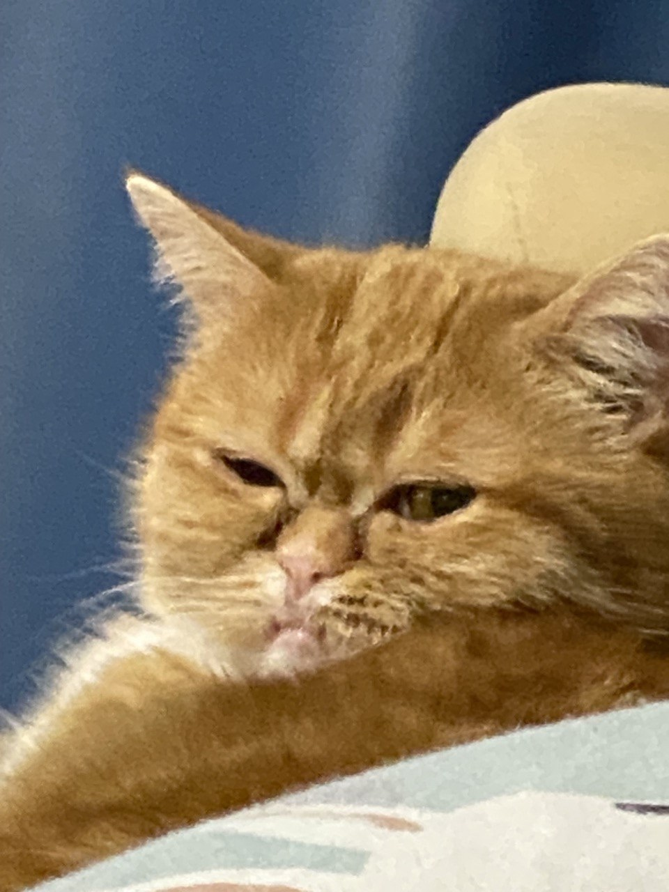
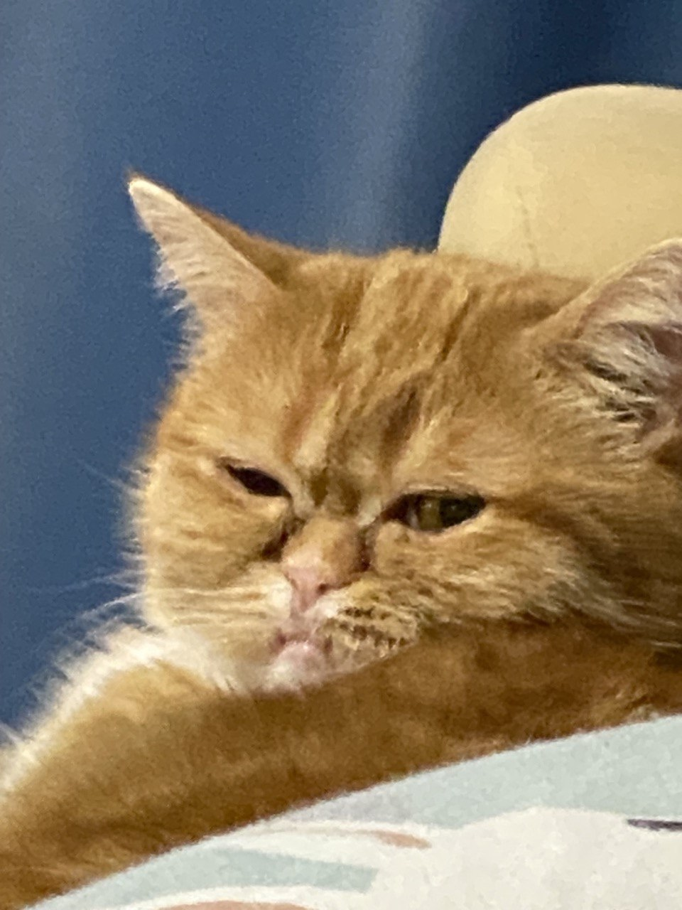

Мою кошку назвали в честь орка
Как выглядит орк, можно посмотреть в Яндекс
Если лень переходить, то вот. Сходство просто на все 100%
 

| Сходства | Различия |
|---|---|
| Выпирающие нижние клыки | Кошка существует |
| Оба воинственные | Кошка пушистая |
| Мило пускает слюнки |
Любимые дела моей кошки это: